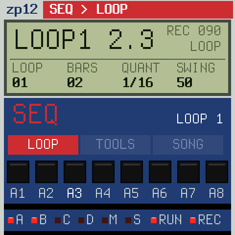

Free firmware for the M-VAVE FM-1
32 pads at 26.04 kHz, pitched the old way: no interpolation, the aliasing is the sound. Eight channels with their filters, eleven loops on the black keys, songs, step editing, swing, and the reverb and delay of sloopDX. Install it from the browser; going back is one click.

12-bit samples at 26.04 kHz, pitched by their playback rate with nothing smoothed: tuned up they skip, down they repeat. TUNE in semitones and cents, 45 → 33 for the grain; own samples stored at ×2 and played an octave down: twice the time, twice the grit.
Every pad plays on a channel, one sound at a time: a new hit cuts the last. Channels 1–2 have a resonant 4-pole low-pass, open at the hit and closing with the decay, 3–6 a fixed one, 7–8 none.
KNOB 1–4 are the channel faders, SEL held for 5–8. The LCD's four columns always say what the knobs do now; a page lets go of them by itself.
The black keys are loops: stopped they switch at once, playing they wait for the end of the loop. Each its own length, 1–32 bars, or AUTO from your first take.
Real time with a count-in and AUTO CORRECT from 1/8 to 1/32T, overdub, erase while it plays. Hold SEQ: the white keys are the 16 steps of a pad.
50, 54, 58, 63, 67, 71 %: the classic steps on the 16ths (or the 8ths). Tap tempo on ENV, the click on REC only or always.
Four songs, each a chain of loops with repeats. The LCD shows where you are: S2.03 L4, song two, step three, loop four.
sloopDX's stereo chorus, tempo delay and reverb with pre-delay. Each pad sends to them, and has a drive of its own.
Sounds, mix, effects, loops and songs save by themselves when you stop, in a room of the flash sloopDX leaves free: your sloopDX banks stay where they are.
Bank A and B a full kit, C bank A lower and grainier at 45 → 33 and a grand piano (two funky stabs, Cm9 and F13, and a note to play over all keys), D what a sampler is for: chords and phrases. Put any of the 27 on any pad (hit it, turn PRESETS); your own with the sample editor.
All from free sources: VSCO-2 CE, VCSL, Sonic Pi (CC0); the Wurlitzer E-piano by Greg Sullivan (CC BY 3.0). No sound from a commercial record or another company's machine.
Every key, button and page on one sheet, in the panel's colours. The PDF (A4) to print and lay next to the FM-1.
| White 1–8 | pads of bank A (or C) |
| White 9–16 | pads of bank B (or D) |
| OCT+ OCT− | banks C + D / back to A + B (the LEDs A–D show which) |
| black keys | loops 1–11: stopped at once; playing: from the end of the loop (its key blinks, the LCD says LOOP 3 NEXT). The loop playing is lit. |
| ARP | MULTI PITCH: the last sound on all 27 keys, F4 (white 8) as tuned. ARP again: pads. |
| USB MIDI | notes 36–67 play pads A1–D8 |
Any pad, any of these 27 samples or your own (the sample editor): hit it, turn PRESETS. 12 bit at 26.04 kHz, pitched without interpolation.
| Channels | a pad plays on a channel 1–8 (OUT, CHAN); one sound at a time each: a new hit cuts the last (HAT and OHAT share 3) |
| 1–2 | a 4-pole resonant low-pass: open as CUT at the hit, closing two octaves as the sound decays (RESO) |
| 3–6 · 7–8 | a fixed low-pass · no filter |
| 45 → 33 | TRUNC, SPEED: played at 33/45 of its rate: lower, grainier. Own samples also at ×2 (the editor): an octave down on the pad |
| KNOB 1–4 | the faders of channels 1–4; SEL held: 5–8, on any page. The LCD's four columns always say what the knobs do. |
| A page | EDIT, FX, SEQ, GLO open one; untouched for 6 s, or HOME: the faders again |
| SELECT | tempo |
| ALGORITHM | the sound to edit (A1 … D8), without playing it |
| PRESETS | the sample of the pad you hit last: one sample on as many pads as you like, each with its own TUNE, DECAY … |
| MASTER | the volume |
| EDIT WAVE | the pad's sample · COPY> pad · COPY (turn twice) · – |
| SOUND | TUNE (semitones) · FINE · DECAY · LEVEL |
| TRUNC | START · END · DIR (fwd / rev) · SPEED (45 / 33) |
| OUT | CHAN · PAN · CUT · RESO (CUT / RESO on ch 1–2) |
| SENDS | DRIVE · CHO · DLY · REV: the effects of this pad |
| FX FILTER | DJ filter on the whole mix: left a low-pass, right a high-pass, centre OFF · RESO |
| CHORUS | RATE · DEPTH · MIX |
| DELAY | TIME (1/4 … 16T, in tempo) · FDBK · COLOR · MIX |
| REVERB | SIZE · DAMP · PRE (ms) |
| SEQ LOOP | LOOP · BARS (AUTO, 1–32) · QUANT (AUTO CORRECT) · SWING 50–71 % |
| LOOP TOOLS | CLEAR (turn twice) · COPY> loop · COPY (turn twice) |
| SONG | STEP · LOOP · REPEAT (0: the song ends here) · SONG OFF / 1–4 |
| GLO SETUP | TEMPO · CLICK (off / rec / on) · VER · RESET (turn twice: the factory state) |
Each tap of EDIT, FX or SEQ: the next of its pages. The header says where you are (EDIT > SOUND), the tabs below show the others.
| PLAY | run / stop (lit while it runs) |
| REC | stopped: armed (blinks); playing: overdub on / off; hold 2 s: clear the loop |
| EDIT + OCT− | undo the last clear / erase / copy (again: redo) |
| LFO + pad | erase: that pad's hits go as the playhead passes (stopped: all at once) |
| ENV | tap tempo (it blinks on the beat) |
| SAVE | save now; held + a black key: the loop into that loop; stopped and quiet for 3 s it saves by itself |
| HOME | the faders |
Back to sloopDX: its installer. No answer? Hold OCT− while switching on (USB rescue).
No: the FM-1 has no audio input, and its USB audio only goes to the computer. Your own sounds come from the sample editor: drop a WAV, trim it, put it on a pad.
While it is installed, yes; your sloopDX projects, DX7 banks and kit stay in their own part of the flash, and the sloopDX installer puts sloopDX back.
No. It is inspired by how the 12-bit samplers of the 80s sound and work; it ships none of their sounds, code or names. Those names are trademarks of their owners.
Press OCT+ (the LEDs C and D light), then white key 9: D1, the E-piano chord. ARP plays it over all keys.
GLO, KNOB 4 (RESET) twice to the right: sounds, mix, effects, loops and songs as new.